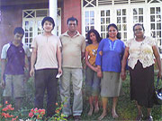

「この留学プログラムに対して、不安や戸惑ったことは、特にありませんでした。
常にマンツーマンで英語習得ができるということ、価格、異文化（特にアジア）に触れることができることが数少ない企画であったため、参加を決めました。」
英語レッスンは、親切・丁寧に教えて頂きました。
宿題は特に期間も短く、お願いもしなかったのでありませんでした。
ですが新聞やテレビなど英語を学べる教材をたくさん用意してあり、退屈なく過ごすことができました。
スリランカでのホームステイは大変貴重な経験をさせて頂きました。
蚊を除けばすべてがよかったです。
ホストファミリーの皆さんによくして頂きました。
途中、人（来客）が次から次からくるので、覚えるのが大変でしたが、皆さんそろっていい方です。
低開発村視察は自分の要望したスケジュール上あまり、遠くまではいけなかったのですがよかったです。
スリランカの治安と人の良さに驚きました。
あとはイメージどおりです。
充電器とノートパソコンを持っていけばよかったと思います。
ホストマザーには大変お世話になりました。
知り合いとアポイントをとってもらったり、帰りは空港内まできて頂き、本当にお世話になりました。
マーネルさんには、行きたい場所の手配を細かく対応してもらったりと大変よくして頂きました。
人柄が皆良くて、とてもいい経験をさせて頂きました。
またこのプログラムを利用してスリランカに行きたいと思っております。」